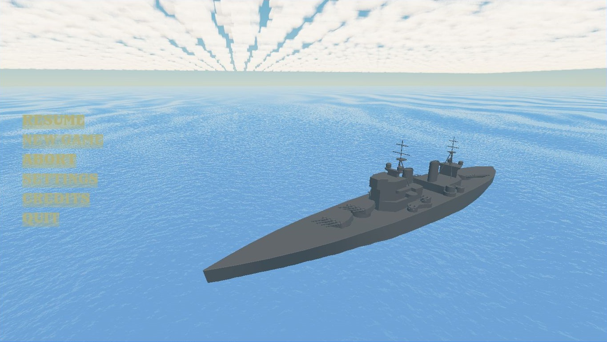
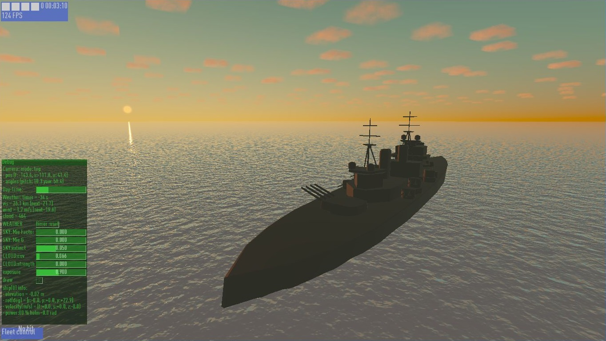
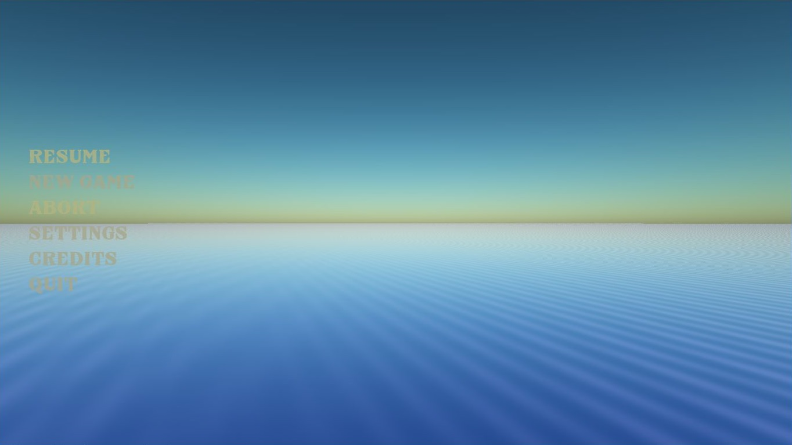
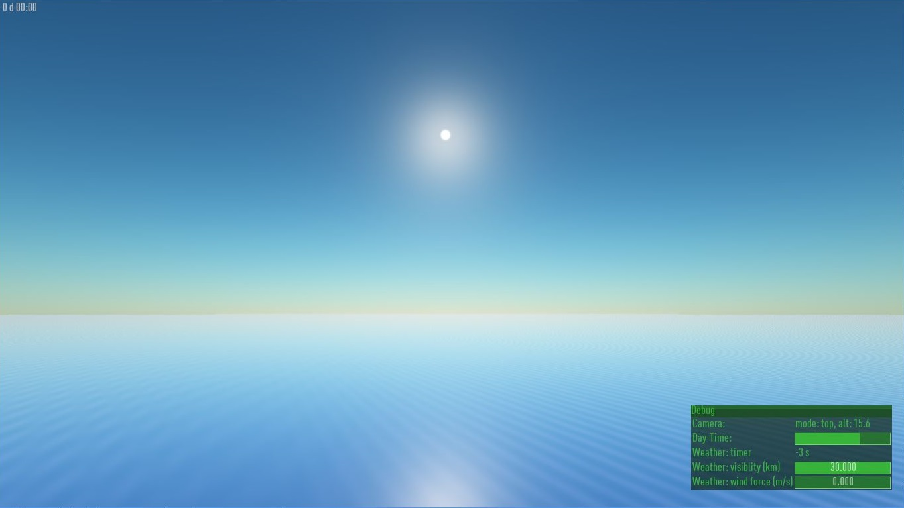

About the game
The player controls battleships, inspired from the World-War 2.
A demo is planned to be made, in which the player controls only a ship. Sit and shoot!
( only in  )
)
The player controls battleships, inspired from the World-War 2.
A demo is planned to be made, in which the player controls only a ship. Sit and shoot!
The game is currently an early prototype. I'm still focusing on the rendering part. That said, it needs some game-play features before it can be shown in a playable demo.
[ ] | game-core: implement ship hits by shells (and some of damages), create collision-meshes |
[ ] | rendering: add shadows and cloud sun-ray occlusion |
[ ] | rendering: add smokes (notably from canon-shots) and water splashes |
[ ] | game-core: implement the AI |
[ ] | sound: create basic sounds of the wind and gun shot |
[ ] | ocean waves: improve geometry, notably the Gerstner wave |
[ ] | wave simulation (local waves) |
[ ] | modeling: add more details on ships, with LOD system |
[ ] | rendering: improve night looking |
[ ] | rendering: rain effect |




Made with python, the game concept is inspired by the RTS game gendra. The navy played an important role during the early Word-War 2, before that the aviation becomes pre-dominant over the seas.